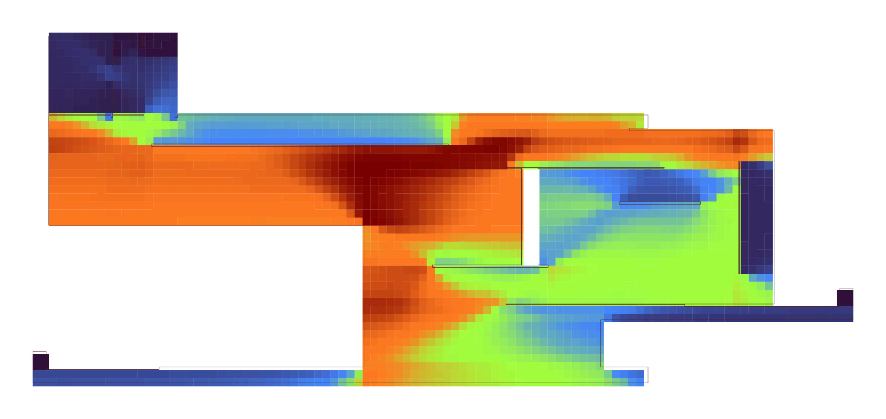
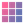
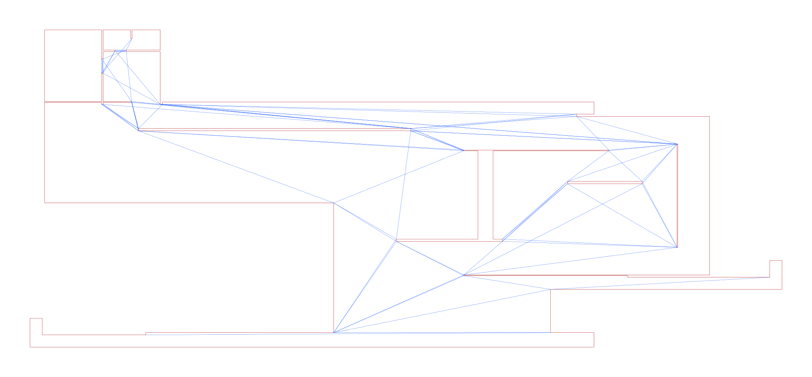
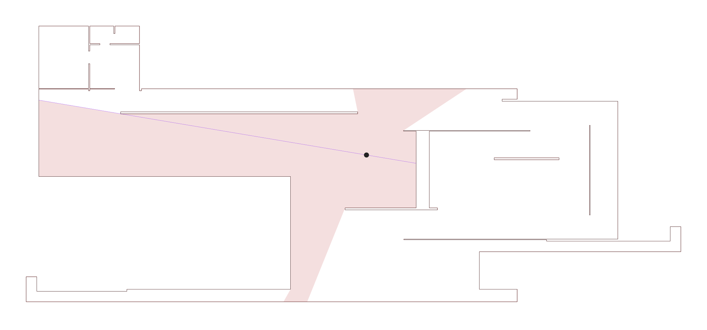
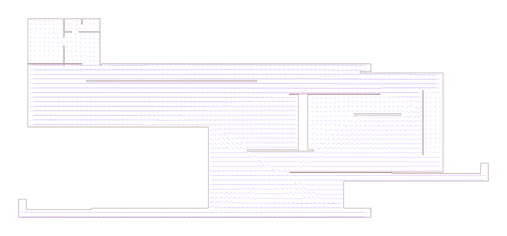
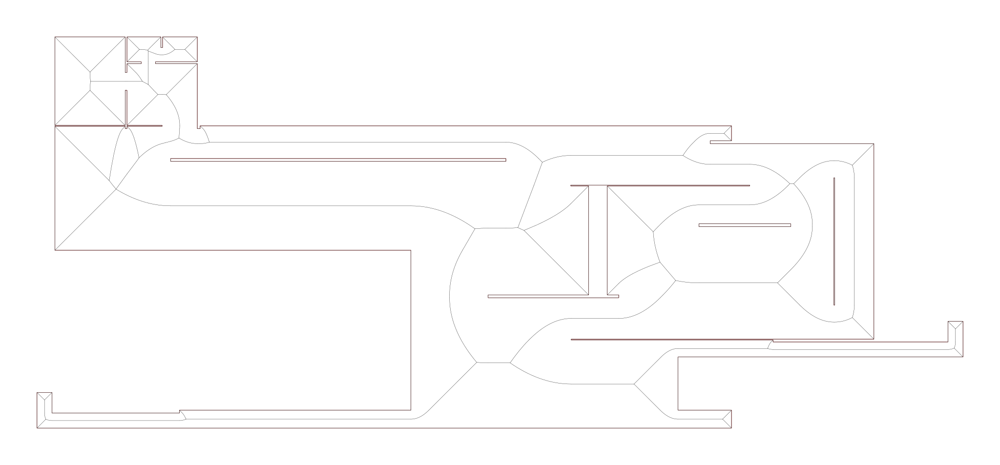

Syntaktika / Templates
Templates
Small, working Grasshopper definitions, each showing one analysis on the same example plan.
Open them from the Templates
component: right-click it and choose a file. The files are also in
Syntaktika/Templates in the repository.
Before you start
Common setup
Every template starts the same way. Two curve parameters and a slider feed an Environment, which every analysis then uses.
- Boundary
- Obstacles
- Environment
- Boundary
- One closed curve: the outline of the plan.
- Obstacles
- Walls, columns and other elements inside the boundary. Open or closed curves.
- Precision Scaling
- Number of decimals kept by the integer geometry engine. Default
2.
To analyse your own plan, right-click each curve parameter and choose Set one Curve (boundary) or Set Multiple Curves (obstacles). In the drawings below, dark lines are the input plan and coloured elements are what the template previews.
Simple isovist
01_simple_isovist.gh

An isovist is the region of space visible from one point. The template computes the isovist of the Origin point and fills its boundary with a surface so it reads as a polygon. Deconstruct Isovist gives its measures: area, perimeter, occlusivity (the total length of occluding edges, where the view continues behind an obstacle) and compactness.
- Origin
- The viewpoint. Move it to see the isovist update.
Grid isovist
02_grid_isovist.gh

- Environment
 GridMesh
GridMesh Grid Isovist
Grid Isovist
Mesh Gradient
Computing isovists everywhere turns a single measurement into a map. GridMesh fills the plan with square cells, Grid Isovist computes an isovist from the centre of every cell, and Mesh Gradient colours the grid by Isovist Area. Large, open areas stand out against secluded corners.
- Cell Size
- Grid resolution, default
50. Smaller cells give a finer map; time grows with the number of cells. - Values
- Try connecting Isovist Perimeter, Occlusivity or Compactness instead of area.
- Gradient Index
- Colour scheme:
0Thermal,1Turbo (default),2Viridis, and more.
Isovist thresholds
04_isovist_thresholds.gh

Thresholds are a method new to Syntaktika. Where an isovist is cut by an obstacle, its boundary has occluding edges: places where the view slips past a corner. Pairing occluding points on the left and right gives threshold lines that divide the isovist into nested regions, the partial views into the next space.
Each threshold has a depth (how deeply it is nested, starting at 1) and a potency (how strongly it closes off what lies behind it). Deconstruct Threshold Isovist also reports summary measures such as maximum visible depth, mean threshold depth and distributedness.
Environment thresholds
05_environment_thresholds.gh

One isovist's thresholds depend on where you stand. Computing thresholds from every cell of a grid and matching the ones that repeat gives environment thresholds: the thresholds of the plan itself. Each one records how many cells see it and the area of the plan it is seen from. Together they map the plan's main spatial transitions.
The template draws the valid thresholds and remaps each one's Validation Count (the number of cells that see it) to line width, so the most widely seen thresholds are drawn heaviest.
- Min and Max widths
- The line-width range, default
1–100. - Cell Size
- Default
50. More cells mean more viewpoints, and thresholds are confirmed more reliably.
Maximal diameter
06_max_diameter.gh

The maximal diameter is the longest straight line between two corners of an isovist. It gives the dominant direction of view from a point. Maximal Diameter also returns the diameters from every corner, and with a tolerance it returns all diameters close to the longest.
- Tolerance
- Diameters whose length is within this value of the longest also count as maximal. Default
1.
Maximal diameter grid
07_max_diameter_grid.gh

Template 06, repeated for every cell of a grid. Each cell's maximal diameter is scaled down around the cell centre and drawn as a short line, which shows how the dominant view direction changes across the plan. The diameter length can also colour the grid (Max Diameter Length Gradient).
- Diameter Scaling Factor
- Length of the drawn lines relative to the full diameter. Default
0.02. - Line Width
- Display width of the lines.
Medial axis
11_medial_axis.gh

The medial axis is the set of points that are equally distant from two or more walls. It is the skeleton of the plan's free space. Medial Axis builds it from the Environment's segments, using a segment Voronoi diagram that it computes internally. The result is a graph of parts (lines or parabolas) and points (junctions).
Each part is classified by the pair of elements that generates it: Line–Line, Convex–Line, Convex–Convex or Concave. Deconstruct Medial Axis Part returns each part's ID, geometry, generating cells, category, region and chords.
First run: Medial Axis sets up the Python 3 engine and
pyvoronoi automatically. This needs an internet connection once, and the component
recomputes when setup is done.
- Condense Concave Parts
- Optional. Merges the parts generated around concave corners.